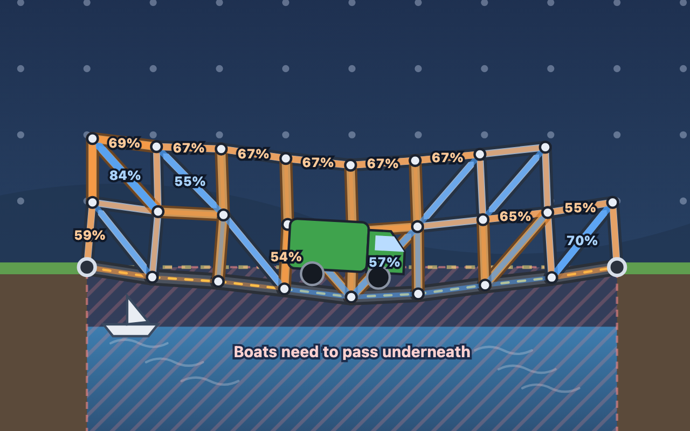
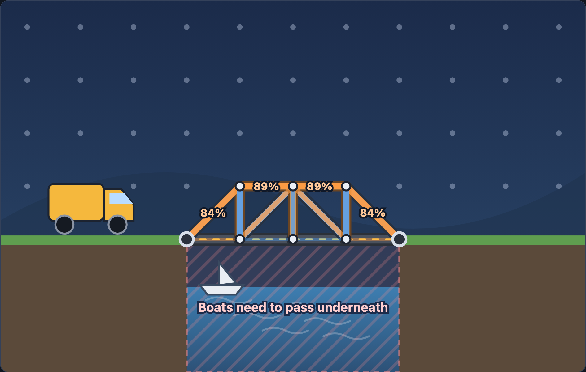
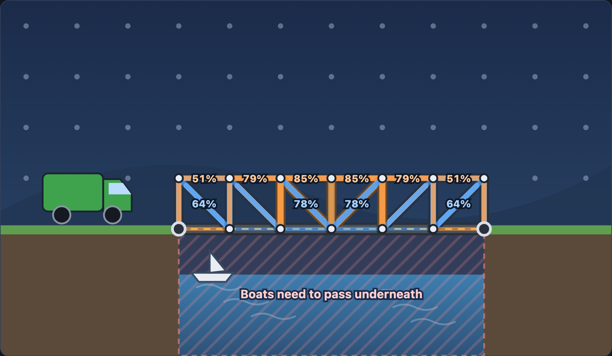

Build a truss bridge and drive a truck across: triangles, tension and compression, buckling, bending and cable-stayed bridges.
UK Years 8–13Ages 12–18US grades 7–12D&T · Physics
dowplay.com/games/bridge-builder
Runs in any browser on Chromebooks, iPads, laptops and phones. No accounts, no ads, nothing to install. Progress is saved only on the device being used.
A separate PDF has the worksheets on their own, ready to print for students.
Bridge Builder turns structural engineering into a puzzle. Students build a bridge from road, wood, steel and cables, then drive a car, van, truck, lorry or crane across it. The game works out the force in every beam the way structural engineers do (the direct stiffness method): beams snap when they're pulled too hard, crush or buckle when they're squashed, and bridges without triangles fold up. Its eight levels run from Year 8 to Year 13.
Each lesson plan fills 60 minutes. The levels also work as a homework or a club activity: each takes 5–15 minutes.
| Course | Content | Levels |
|---|---|---|
| KS3 Science (England) | Forces as pushes or pulls; balanced forces; forces that stretch and squash objects | 1–4 |
| KS3 Design & Technology | Using the properties of materials and the performance of structural elements to achieve functioning solutions | All |
| GCSE Physics / Combined Science | Resultant forces; forces and elasticity; moments | 3–8 |
| GCSE Design & Technology | Structures and triangulation; choosing materials by their properties and cost | 1–6 |
| A-level Physics / Maths (mechanics) | Resolving forces; equilibrium; moments; materials: stress, strain and stiffness | 5–8 |
| A-level and BTEC Engineering | Truss analysis; tension, compression and buckling; bending moments | 5–8 |
| US (NGSS) | MS-ETS1-1, MS-ETS1-2, HS-ETS1-3: designing solutions within criteria and constraints, such as cost and safety | All |
The game analyses the bridge like a structural engineer:
| Material | Pull (kN) | Squash (kN) | Weight (kN per square) | Cost |
|---|---|---|---|---|
| Road | 200 | 200 | 4 | £15 |
| Wood | 70 | 60 (30 diagonal) | 1.5 | £8 (£11 diagonal) |
| Steel | 200 | 180 (90 diagonal) | 3 | £16 (£23 diagonal) |
| Cable | 200 | 0: goes slack | 0.5 | £5 per square of length |
Squashed beams buckle at a force that falls with the square of their length: wood buckles at 60 ÷ L² kN and steel at 180 ÷ L² kN, with L in squares. A diagonal is √2 squares long, so it buckles at half the force of a straight beam. Vehicles: car 20 kN, van 30 kN, truck 60 kN, lorry 80 kN, crane 100 kN (10 kN is about 1 tonne).
Tick Show forces to colour every beam: blue is pulled (tension), orange is squashed (compression) and red is over 100%, so it would break. Percentages on the hardest-working beams show the worst moment as the vehicle crosses. When it drives, the bending is drawn 40 times bigger so students can see it, and a bridge that fails collapses.
1 star for getting across, 2 for staying within the budget, 3 for matching the cheapest design our checker found.
Joints are pins, so beams carry only pulling or squashing forces (real joints are bolted or welded and carry some bending). The vehicle crosses slowly, so there's no bouncing, wind or vibration, and materials never fatigue. Good discussion points with older students.
Tension: pulled. Compression: squashed. Truss: a frame of triangles. Buckling: a squashed beam bowing sideways and failing. Span: the gap a bridge crosses. Chord: the top or bottom beams of a truss. Pier: a support in the middle. Bending moment: the turning effect of the load, which the chords resist.
"3 stars" is the cheapest design our checker found. Keep it to yourself until students have had a go: the fun is in the search.
The game says why, which makes a good discussion starter:
After a failed run, red rings mark the beams that broke or the joints that wobbled.
| Time | Activity |
|---|---|
| Starter 10 min | Open Level 1, Mind the Gap. Lay two pieces of road and drive the car: the bridge folds. Ask why, then add one diagonal from an anchor bolt on the cliff to the middle joint and drive again. If you have straws or card strips, let students push a square and a triangle out of shape. |
| Main 1 15 min | Worksheet 1, Part A: which frames are rigid, pulled or squashed, vehicle weights and bridge costs. |
| Main 2 25 min | Pairs play levels 1–4 with Show forces ticked and fill in the record table (Part B). Before driving, one partner predicts which beam will work hardest. |
| Plenary 10 min | Part C together: the Push and Pull forces picture. Why steel on the diagonals and wood elsewhere? Exit ticket: name a structure near school that uses triangles, and say why. |
Use the in-game hints. Ask students to find a square in their bridge and add one diagonal to it.
Find the cheapest working design for Push and Pull (3 stars at £192). Try Level 5, Buckle Up.
Homework: Worksheet 1, Part D, and get 3 stars on Level 2.
| Time | Activity |
|---|---|
| Starter 10 min | Show Level 5, Buckle Up with Show forces ticked. Build a truss with the long diagonals squashed and drive: they buckle. Ask why a beam that's 41% longer is only half as strong when squashed. Then flip the diagonals so they're pulled. |
| Main 1 15 min | Worksheet 2, questions 1–3: resolving forces in a frame, buckling, and chord forces in a deep truss. |
| Main 2 25 min | Pairs play levels 5–8. Use question 4 to guide Cable-Stayed and question 5 to discuss material choices. |
| Plenary 10 min | Plan question 6 together: three ways to carry a crane across a river. Finish it as homework. |
Draw force triangles for question 1 together. Use the colours in the game: blue pulled, orange squashed.
Go for 3 stars on Go Deeper (£686) or Heavy Haul (£353). Research the Forth Bridge (a cantilever truss) or the Millau Viaduct (cable-stayed).
Homework: Worksheet 2, question 6 (6 marks).
A1Each frame is made of beams joined by pins that can turn. Which frames keep their shape when you push sideways on the top? Explain. [2]
A2Is each of these being pulled (tension) or squashed (compression)?
a) the rope holding up a swing b) a table leg c) the cables of a suspension bridge d) the top beam of a truss bridge [2]
A3Vehicle weights.
a) The lorry weighs 80 kN. About how many tonnes is that? b) The crane weighs 100 kN. How many tonnes? [2]
A4A bridge uses 4 pieces of road at £15 each, 6 straight wooden beams at £8 each and 4 diagonal wooden beams at £11 each. What does it cost? [2]
Tick Show forces. Before you drive, predict which beam will work hardest. Record your best design for each level.
| Level | What I built | Cost | Stars | What went wrong, and how I fixed it |
|---|---|---|---|---|
| 1 | £ | |||
| 2 | £ | |||
| 3 | £ | |||
| 4 | £ |
This is Push and Pull with Show forces ticked: blue beams are pulled, orange beams are squashed. The percentages show how close the hardest-working beams come to their limit as the truck crosses. The four diagonal beams are steel; the top beams and the uprights are wood.

C1Are the beams along the top pulled or squashed? And the upright beams? [2]
C2The top beams show 89%. What does that mean? [1]
C3The steel end diagonals are squashed with a force of about 76 kN. A wooden diagonal can only take 30 kN of squashing. Why is steel used there? [2]
C4Steel costs twice as much as wood. Why not make every beam steel? [2]
D1Triangles are used in cranes, roof trusses, electricity pylons and bicycle frames. Explain why engineers use them. [3]
1Resolving forces. Two beams at 45° meet at the top and are tied together at the bottom. A load of 60 kN pushes down on the top joint. Ignore the beams' own weight.
a) Each sloping beam carries half the load vertically. Show that the force in each sloping beam is about 42 kN. Is it pulled or squashed? [3]
b) What is the force in the tie at the bottom? Is it pulled or squashed? [2]
c) The sloping beams are diagonals in Bridge Builder. Should they be wood or steel? Should the tie be wood or steel? [2]
2Buckling (Buckle Up). This Pratt truss carries an 80 kN lorry. Blue beams are pulled; orange beams are squashed.

a) A straight wooden beam (1 square long) buckles at 60 kN. A diagonal is √2 squares long. Show that it buckles at 30 kN. [2]
b) At what force would a wooden beam 2 squares long buckle? [1]
c) In this truss the long diagonals are pulled and the short uprights are squashed. Explain why that is a good design. [2]
3Go Deeper. An 80 kN lorry stands in the middle of a 32 m span. Ignore the bridge's own weight.
a) Calculate the biggest bending moment. [1]
b) Calculate the force in the top chord if the truss is 4 m deep, and if it is 8 m deep. [2]
c) For each depth, could straight wooden beams carry the top chord force? Could steel? [2]
d) Explain why long bridges are built deeper in the middle. [2]
4Cable-Stayed. A straight cable runs from a tower top down to the road and holds up 20 kN of the road's weight.
a) Calculate the tension in the cable if it is at 45° to the road, at 30°, and at 15°. [3]
b) Use your answers to explain why cable-stayed bridges have tall towers. [2]
5Materials and cost. Wood pulls 70 kN for £8 a square; steel pulls 200 kN for £16.
a) Which gives more pulling strength per pound? Show your working. [2]
b) The cheapest designs still use plenty of wood. Suggest two reasons why. [2]
6Evaluate. A 100 kN crane must cross a 40 m river. Evaluate three designs: a deep truss, a cable-stayed bridge, and a bridge with a support in the middle of the river. Use evidence from Bridge Builder. [6]
Continue on lined paper if you need more space.
A1(b) and (c) (1). A triangle can't change shape without a beam changing length; the square in (a) folds at its pins, but the diagonal in (c) splits it into triangles (1).
A2a) tension b) compression c) tension d) compression (2 marks for all four, 1 for two or three).
A3a) about 8 tonnes b) about 10 tonnes.
A44 × 15 + 6 × 8 + 4 × 11 = 60 + 48 + 44 (1) = £152 (1).
C1The top beams are squashed (orange) (1); the uprights are pulled (blue) (1).
C2At the worst moment, they carry 89% of the force that would make them fail.
C376 kN is far more than a wooden diagonal's 30 kN, so wood would buckle (1); a steel diagonal can take 90 kN (1).
C4It would cost much more (1); steel is also twice as heavy, adding to the load (1). Wood is strong enough for the beams with smaller forces.
D1A triangle can't change shape unless a side stretches or squashes (1), so it stays rigid without heavy, stiff joints (1); triangles let a light frame of thin beams carry big loads, saving material, weight and cost (1).
Free engineering games for ages 12–18: Light It Up (circuits), Gear Garage (gears and machines) and Grid Manager (energy), each with a free teacher pack. Ideas for new games? Get in touch at dowplay.com/about#contact.
1a) Each beam supports 30 kN vertically (1): F sin 45° = 30, so F = 30 ÷ 0.707 (1) = 42.4 kN, squashed (1).
b) Horizontal part of each beam's force: 42.4 × cos 45° = 30 kN (1); the tie stops the feet spreading, so it's pulled (1).
c) The sloping beams need steel: 42 kN is more than a wooden diagonal's 30 kN but less than steel's 90 kN (1). The tie can be wood: 30 kN is less than wood's 70 kN pulling strength (1).
2a) Strength is proportional to 1 ÷ L²: 60 ÷ (√2)² (1) = 60 ÷ 2 = 30 kN (1).
b) 60 ÷ 2² = 15 kN.
c) Long beams are weak when squashed but not when pulled, so the long diagonals are put in tension (1) and the short uprights, which resist buckling better, take the compression (1).
3a) M = 80 × 32 ÷ 4 = 640 kN m.
b) 640 ÷ 4 = 160 kN; 640 ÷ 8 = 80 kN.
c) Wood: no at either depth (more than 60 kN) (1). Steel: yes at both (less than 180 kN) (1).
d) Chord force = moment ÷ depth, so a deeper truss has smaller forces (1), needing lighter, cheaper beams where the moment is biggest (1).
4a) T = 20 ÷ sin θ: 45° → 28.3 kN; 30° → 40 kN; 15° → 77.3 kN.
b) Flatter cables need much more tension for the same weight (1); tall towers make the cables steeper, so they need less tension and can be thinner and cheaper (1).
5a) Wood 70 ÷ 8 = 8.75 kN per £; steel 200 ÷ 16 = 12.5 kN per £ (1): steel (1).
b) Many beams carry small forces, and a wooden beam that's strong enough costs half as much (1); wood is half the weight (1.5 kN against 3 kN per square), so it adds less load to the bridge (1).
| Level | Description |
|---|---|
| 3 (5–6 marks) | A detailed evaluation of all three designs, comparing forces, materials and cost, with calculations or evidence from the game. Reaches a justified conclusion. |
| 2 (3–4 marks) | Compares at least two designs with some evidence. The conclusion is partial or not fully justified. |
| 1 (1–2 marks) | Simple statements about one or two designs, with little comparison. |
| 0 | Nothing worthy of credit. |
Credit references to real bridges (the Forth Bridge, the Millau Viaduct, the Humber Bridge) and to factors the game leaves out, such as wind, vibration and fatigue.
A one-lesson D&T or science practical that tests the same ideas with real materials.